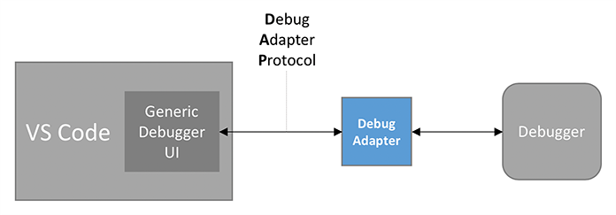
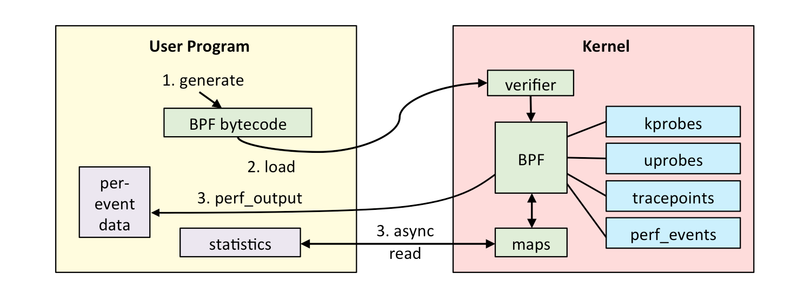
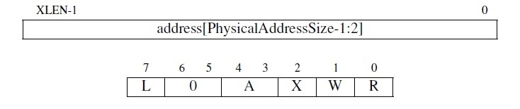
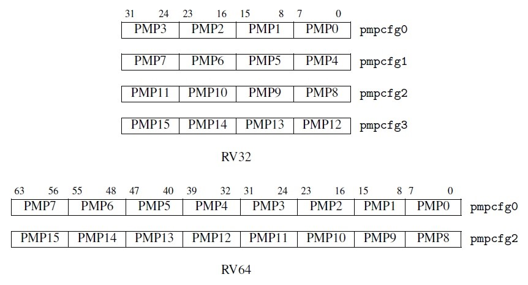

相关技术介绍#
基于 Visual Studio Code 的在线调试方案#
近年来，具有高度的可定制性的轻量级集成开发环境，如 Sublime Text、Atom 和 Visual Studio Code，已经迅速普及。然而，轻量级 IDE 对操作系统在线调试的支持非常有限。在线调试的优势是，本地计算机性能要求不高，无需在本地配置开发环境，便于分享协作，可以构建高效的程序开发教学平台[1]。
鉴于轻量级集成开发环境的日益普及，以及我们对操作系统在线调试支持的局限性的观察，我们基于Visual Studio Code（最流行和最广泛使用的轻量级IDE之一）设计和实现了一个操作系统在线开发、调试环境。
Visual Studio Code 中的调试架构#
Visual Studio Code基于Debug Adapter 协议，实现了一个原生的，非语言相关的调试器UI，它可以和任意后台调试程序通信。通常来讲，GDB等调试器不会实现Debug Adapter 协议，因此需要调试适配器（Debug Adapter）去“适配”这个协议。调试适配器一般而言是一个独立和调试器通信的进程。（图1.1）
Debug Adapter 协议主要由三个部分组成：
Events定义了调试过程中可能发生的事件；
Requests定义了VSCode等调试器UI对Debug Adapter的请求；
Responds定义了Debug Adapter对请求的回应。
基于 Visual Studio Code 的在线调试方案#
GNU 调试器（GNU Debugger，GDB）是一个支持多种语言和操作系统的开源可移植调试器，它提供了一种常用于调试嵌入式系统的“远程”模式（即GDB运行在一台机器上，被调试的程序运行在虚拟机里或另一台机器上）。 GDB 可以通过串口或 TCP/IP 与实现了 RSP 协议的运行在远程目标上的gdbserver进行通信。
此外，GDB提供了GDB/MI接口，使得将GDB作为复杂系统中的组件成为可能。
QEMU虚拟机的gdbserver#
QEMU（Quick Emulator） 是一个完全由软件实现的开源虚拟机。它通过gdbstub特性提供了gdbserver，使得GDB可以通过远程连接控制 QEMU 中运行的操作系统[2]，从而允许用户以与在真实硬件上使用 JTAG 等低级调试工具类似的方式调试客户代码（Guest）。
设备树与设备节点属性#
设备树（Device Tree）是一种数据结构，用于表示硬件系统的结构和功能。是一个文本文件，描述了硬件系统的结构和功能，并将这些信息提供给操作系统。设备树包含了关于硬件系统的信息，如：处理器的类型和数量、板载设备（如存储器、网卡、显卡等）的类型和数量、硬件接口（如 I2C、SPI、UART 等）的类型和地址信息等。
设备树中的节点是用来描述硬件设备的信息的。一个设备树节点包含了一个或多个属性，每个属性都是一个键-值对，用来描述设备的某一特定信息。而操作系统就是通过这些节点上的信息来实现对设备的识别和初始化。具体而言，一个设备节点上会有一些常见的属性：
compatible：表示设备的类型，可以是设备的厂商名、产品名等，如“virtio,mmio” 指的是这个设备通过 virtio 协议、MMIO（内存映射 I/O）方式来驱动。
reg：表示设备在系统中的地址空间位置。
interrupts：表示设备支持的中断信号。
设备树在很多嵌入式系统中都得到了广泛应用，它是一种常用的方法，用于将硬件（特别是外设）信息传递给操作系统。在桌面和服务器系统中，PCI总线可以起到设备树的作用，通过访问PCI总线上特定地址空间，也可以遍历出具有挂在PCI总线上的各种PCI设备。
rCore-Tutorial-v3的串口支持#
串口（Universal Asynchronous Receiver-Transmitter，简称UART）是一种在嵌入式系统中常用的用于传输、接收系列数据的外部设备。串行数据传输是逐位（bit）顺序发送数据的过程。
本项目中，我们调试的rCore-Tutorial-v3操作系统运行在QEMU虚拟机上，使用了QEMU提供的虚拟串口。QEMU虚拟机模拟的串口兼容了NS16550A硬件规范。根据该规范，每个UART使用8个I/O字节来访问其寄存器。下表显示了UART中每个寄存器的地址和基本含义。表中使用的 base 是串口设备的起始地址。在QEMU模拟的virt计算机中串口设备寄存器的MMIO起始地址为 0x10000000 。
表1.1 UART中每个寄存器的地址和基本含义
I/O port |
Read (DLAB=0) |
Write (DLAB=0) |
Read (DLAB=1) |
Write (DLAB=1) |
|---|---|---|---|---|
base |
RBR receiver buffer |
THR transmitter holding |
DLL divisor latch LSB |
DLL divisor latch LSB |
base+1 |
IER interrupt enable |
IER interrupt enable |
DLM divisor latch MSB |
DLM divisor latch MSB |
base+2 |
IIR interrupt identification |
FCR FIFO control |
IIR interrupt identification |
FCR FIFO control |
base+3 |
LCR line control |
LCR line control |
LCR line control |
LCR line control |
base+4 |
MCR modem control |
MCR modem control |
MCR modem control |
MCR modem control |
base+5 |
LSR line status |
factory test |
LSR line status |
factory test |
base+6 |
MSR modem status |
not used |
MSR modem status |
not used |
base+7 |
SCR scratch |
SCR scratch |
SCR scratch |
SCR scratch |
需要注意到是，表中LCR 寄存器中的 DLAB 位设置为 0 或 1 ，会导致CPU访问的是不同的寄存器。比如，当DLAB位为0时，读位于 base 处的串口寄存器是 RBR；DLAB位为1时，读位于 base 处的串口寄存器是 DLL。
在如下情况下，串口会产生中断：
有新的输入数据进入串口的接收缓存；
串口完成了缓存中数据的发送；
串口发送出现错误。
rCore-Tutorial-v3操作系统的早期版本通过底层的RustSBI来帮助操作系统完成对串口的访问，即操作系统只需发出两种SBI调用请求就可以输出和获取字符。这种实现方式代码量小，但是会产生一定代价，比如操作系统在调用获取字符的SBI调用请求后，RustSBI如果没收到串口字符，会返回 -1 ，因此操作系统只能采用类似轮询的方式来继续查询。这导致在多进程情况下系统效率低下。在近期的版本中，rCore-Tutorial-v3操作系统不再通过RustSBI和串口交互，而是直接在操作系统层面利用中断机制实现了基于MMIO的串口输入输出。串口输出操作比较简单，即向偏移量为 0 的串口控制寄存器的MMIO地址写8位字符即可；而对于串口输入，如果一个进程通过系统调用想获取串口输入，但此时串口还没有输入的字符，那么操作系统就会设置一个进程等待串口输入的条件变量（条件变量包含一个等待队列），然后把当前进程设置等待状态，并挂在这个等待队列上，再把CPU让给其它就绪进程执行；当中断发生时，操作系统通过读PLIC的 Claim 寄存器来了解是否是收到了串口发来的输入中断。如果PLIC识别出是串口，就会调用串口的中断处理例程。串口的中断处理例程对偏移量为 0 的串口寄存器的进行读操作，从而获得通过串口输入的字符，并存入名为NS16550aInner::read_buffer 的缓冲区中，最后操作系统查找等待串口输入的等待队列上的进程，把它唤醒并加入到就绪队列中。这样，当这个进程再次执行时，就可以获取到串口数据了。
eBPF技术#
扩展伯克利包过滤器（extended Berkeley Packet Filter，简称 eBPF）是一个允许在内核里安全地执行不受信任的用户定义插件的子系统。它依赖于静态分析来保护内核免受有漏洞的、恶意的插件的破坏。 eBPF程序可以满足各种复杂的监控需求，下图展示了将eBPF 用于操作系统跟踪的的一个典型的工作流程。用户程序提供eBPF字节码，通过系统调用加载进内核。这个字节码程序经过verifier验证后交付给eBPF模块执行。eBPF程序可以调用操作系统支持的kprobe等内核监测模块，在内核空间中动态地收集各种类型的信息，并将收集到的数据存储在在 eBPF maps 中。
RISC-V中的物理内存保护机制#
RISC-V（发音为“risk-five”）是一个基于精简指令集（RISC）原则的开源指令集架构（ISA）。本项目调试的rCore-Tutorial-v3操作系统即运行在RISC-V上。在实现了 M 模式（机器态）和 U 模式（用户态）的RISC-V处理器上存在一个叫做物理内存保护(PMP，Physical Memory Protection)的功能，允许 M 模式指定 U 模式可以访问的内存地址。PMP 包括几个地址寄存器（通常为 8 到 16 个)和相应的配置寄存器。这些配置寄存器可以授予或拒绝读、写和执行权限。当处于 U 模式的处理器尝试取指或执行 load 或 store 操作时，将地址和所有的 PMP 地址寄存器比较。如果地址大于等于 PMP 地址 i，但小于 PMP 地址 i+1，则 PMP i+1 的配置寄存器决定该访问是否可以继续，如果不能将会引发访问异常。
图1.3显示了 PMP 地址寄存器和配置寄存器的布局。这两者都是 CSR（状态控制寄存器），地址寄存器名为 pmpaddr0 到 pmpaddrN，其中 N+1 是实现的 PMP 个数。地址寄存器右移两位，如果物理地址位宽小于 XLEN-2，则高位为 0。 R、W 和 X 域分别对应读、写和执行权限。A 域设置是否启用此 PMP，L 域锁定了 PMP 和对应的地址寄存器。地址寄存器是右移两位的，这是因为 PMP 以四字节为单位。配置寄存器通过密集地填充在 CSR 中以加速上下文切换，如图1.2.8.2所示。对于 RV32（上半部分），16个配置寄存器被分配到 4 个 CSR 中。对于 RV64（下半部分），它们则分配到了两个偶数编号的 CSR 中。PMP 的配置由 R、W 和 X 位组成，它们分别对于 load，store 和 fetch 操作，还有另一个域 A，当它为 0 时禁用此 PMP，当它为 1 时启用。此外，PMP 配置还支持其他的模式，还有加锁等更多功能。
 